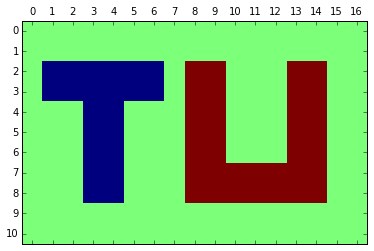

Exploratory Computing with Python#
Developed by Mark Bakker
Notebook 2: 数组#
在这个笔记本中，我们将使用numpy包的函数对数组进行数学运算。有关numpy功能的详细概述可以在这里找到。我们还将绘制图形。我们首先告诉 Jupyter 笔记本将所有图形内联显示。然后，我们导入numpy包并将其命名为np，接着导入matplotlib包的绘图部分并将其命名为plt。在接下来的所有笔记本顶部，我们将添加这三行代码，因为我们将始终使用numpy和matplotlib。
%matplotlib inline
import numpy as np
import matplotlib.pyplot as plt
---------------------------------------------------------------------------
ModuleNotFoundError Traceback (most recent call last)
Cell In[1], line 1
----> 1 get_ipython().run_line_magic('matplotlib', 'inline')
2 import numpy as np
3 import matplotlib.pyplot as plt
File E:\Program Files\Python313\Lib\site-packages\IPython\core\interactiveshell.py:2480, in InteractiveShell.run_line_magic(self, magic_name, line, _stack_depth)
2478 kwargs['local_ns'] = self.get_local_scope(stack_depth)
2479 with self.builtin_trap:
-> 2480 result = fn(*args, **kwargs)
2482 # The code below prevents the output from being displayed
2483 # when using magics with decorator @output_can_be_silenced
2484 # when the last Python token in the expression is a ';'.
2485 if getattr(fn, magic.MAGIC_OUTPUT_CAN_BE_SILENCED, False):
File E:\Program Files\Python313\Lib\site-packages\IPython\core\magics\pylab.py:103, in PylabMagics.matplotlib(self, line)
98 print(
99 "Available matplotlib backends: %s"
100 % _list_matplotlib_backends_and_gui_loops()
101 )
102 else:
--> 103 gui, backend = self.shell.enable_matplotlib(args.gui)
104 self._show_matplotlib_backend(args.gui, backend)
File E:\Program Files\Python313\Lib\site-packages\IPython\core\interactiveshell.py:3665, in InteractiveShell.enable_matplotlib(self, gui)
3662 import matplotlib_inline.backend_inline
3664 from IPython.core import pylabtools as pt
-> 3665 gui, backend = pt.find_gui_and_backend(gui, self.pylab_gui_select)
3667 if gui != None:
3668 # If we have our first gui selection, store it
3669 if self.pylab_gui_select is None:
File E:\Program Files\Python313\Lib\site-packages\IPython\core\pylabtools.py:338, in find_gui_and_backend(gui, gui_select)
321 def find_gui_and_backend(gui=None, gui_select=None):
322 """Given a gui string return the gui and mpl backend.
323
324 Parameters
(...)
335 'WXAgg','Qt4Agg','module://matplotlib_inline.backend_inline','agg').
336 """
--> 338 import matplotlib
340 if _matplotlib_manages_backends():
341 backend_registry = matplotlib.backends.registry.backend_registry
ModuleNotFoundError: No module named 'matplotlib'
一维数组#
创建数组的方法有很多。例如，你可以输入数组的各个元素。
np.array([1, 7, 2, 12])
注意，数组函数接受一个用方括号括起来的点序列。另一个创建数组的函数是 np.ones(shape)，它创建一个指定形状的数组，填充值为 1。还有一个类似的函数 np.zeros(shape) 用于创建一个填充值为 0 的数组（这也可以通过 0 * np.ones(shape) 实现）。除了前面提到的 np.linspace 函数外，还有 np.arange(start, end, step) 函数，它创建一个从 start 开始，以 step 为步长并在到达 end 之前停止的数组。如果不指定步长，则默认设置为 1。如果只指定一个输入值，它将返回一个从 0 开始，递增 1 直到达到指定值的序列（但同样，它会在到达该值之前停止）
print(np.arange(1, 7)) # Takes default steps of 1 and doesn't include 7
print(np.arange(5)) # Starts at 0 end ends at 4, giving 5 numbers
请记住，Python 中的注释是以 # 开头的。
数组具有维度。到目前为止，我们只使用了一维数组，因此维度为 1。对于一维数组，你还可以计算长度（这是 Python 的一部分，而不是 numpy），它返回数组中值的数量。
x = np.array([1, 7, 2, 12])
print('number of dimensions of x:', np.ndim(x))
print('length of x:', len(x))
数组的各个元素可以通过其索引进行访问。索引从 0 开始。这可能需要一些适应。这意味着数组中的第一个值的索引是 0。数组的索引是通过方括号指定的。
x = np.arange(20, 30)
print('array x:', x)
print('value with index 0:', x[0])
print('value with index 5:', x[5])
可以使用冒号语法指定索引范围：x[start:end_before] 或 x[start:end_before:step]。如果未指定 start，则将使用 0。如果未指定步长，则将使用 1。
x = np.arange(20, 30)
print(x)
print(x[0:5])
print(x[:5]) # same as previous one
print(x[3:7])
print(x[2:9:2]) # step is 2
你也可以从数组的末尾开始倒数。一般来说，末尾的索引是未知的。你可以通过输入 x[len(x) - 1] 来找出数组的长度并访问最后一个值，但每次都输入 len(arrayname) 会很不方便。幸运的是，有一个简便的方法：x[-1] 等同于 x[len(x) - 1]，表示数组中的最后一个值。例如：
xvalues = np.arange(0, 100, 10)
print(xvalues)
print(xvalues[len(xvalues) - 1]) # last value in array
print(xvalues[-1]) # much shorter
print(xvalues[-1::-1]) # start at the end and go back with steps of -1
你可以通过指定索引范围将一个值赋给数组的一个范围，或者将一个数组赋给另一个数组的范围，只要这些范围的长度相同。在下面的最后一个示例中，x 的前 5 个值（指定为 x[0:5]）被赋值为 [40, 42, 44, 46, 48]。
x = 20 * np.ones(10)
print(x)
x[0:5] = 40
print(x)
x[0:5] = np.arange(40, 50, 2)
print(x)
练习 1, 数组和索引#
创建一个长度为 20 的零数组。将前 5 个值更改为 10。将接下来的 10 个值更改为从 12 开始并以 2 的步长递增到 30 的序列（用一个命令完成）。将最后 5 个值设置为 30。将数组的值绘制在 \(y\) 轴上，与数组的索引在 \(x\) 轴上进行对比。在 \(x=4\) 和 \(x=14\) 处绘制虚线（即，虚线之间的部分是线条从 10 增加到 30 的地方）。使用 ylim 命令将 \(y\) 轴的最小值和最大值设置为 8 和 32。
数组、列表和元组#
一维数组是一系列值，可以对其进行数学运算。除了数组，Python 还有几种其他数据类型可以存储值的序列。第一个是称为 list 的列表，用方括号输入。第二个是元组（没错，名字有些奇怪），用括号输入。它们之间的区别在于，列表中的值可以在创建后进行更改，而元组则不能。除此之外，目前你只需要记住它们的存在，并且 不能 对列表或元组进行数学运算。当你执行 2 * alist 时，其中 alist 是一个列表，你并不会将 alist 中的所有值都乘以 2。实际上，你会创建一个新列表，其中包含了 alist 两次（即将它们并排添加）。对于元组也是如此。这可能非常有用，但当你的目的是将所有值乘以 2 时却不太适用。在下面的示例中，列表中的第一个值被修改。尝试修改下面的 btuple 中的一个值，你会看到错误信息：
alist = [1, 2, 3]
print('alist', alist)
btuple = (10, 20, 30)
print('btuple', btuple)
alist[0] = 7 # Since alist is a list, you can change values
print('modified alist', alist)
#btuple[0] = 100 # Will give an error
#print(2 * alist)
列表和元组是 Python 中灵活的数据类型。当我们使用命令 np.array([1, 7, 2, 12]) 创建第一个数组时，其实已经在不知不觉中使用了列表。我们给 array 函数传递了一个输入参数：列表 [1, 7, 2, 12]，然后 array 函数返回了一个包含这些值的一维数组。列表和元组可以包含几乎任何东西的序列，而不仅仅是数字。在下面的示例中，alist 包含 5 个“东西”：整数 1、浮点数 20.0、单词 python、一个包含值 1、2、3 的数组，最后是函数 len。后者意味着 alist[4] 实际上是函数 len。可以调用该函数来确定数组的长度，如下所示。后面的内容可能会有些混淆，但如果花时间去思考，这种行为是很有趣的。
alist = [1, 20.0, 'python', np.array([1,2,3]), len]
print(alist)
print(alist[0])
print(alist[2])
print(alist[4](alist[3])) # same as len(np.array([1,2,3]))
二维数组#
数组可以具有任意维度（只要它们适合计算机的内存）。我们将频繁使用二维数组。可以通过指定数组的行数和列数，使用前面提到的任何函数来创建二维数组。请注意，行数和列数必须是一个元组（所以需要用括号括起来），因为这些函数只期望一个输入参数来定义数组的形状，这个参数可以是一个数字或一个包含多个数字的元组。
x = np.ones((3, 4)) # An array with 3 rows and 4 columns
print(x)
数组也可以通过指定数组中的所有值来定义。array 函数接收一个列表，其中每一行由单独的列表组成。在下面的示例中，行被输入在不同的行上。这可能使输入数组更容易，但并不是必须的。你可以使用 reshape 函数将数组的形状更改为任何大小，只要总的元素数量不发生变化。
x = np.array([[4, 2, 3, 2],
[2, 4, 3, 1],
[0, 4, 1, 3]])
print(x)
print(np.reshape(x, (2, 6))) # 2 rows, 6 columns
print(np.reshape(x, (1, 12))) # 1 row, 12 columns
二维数组的索引由两个值指定，首先是行索引，然后是列索引。
x = np.zeros((3, 8))
x[0, 0] = 100
x[1, 4:] = 200 # Row with index 1, columns starting with 4 to the end
x[2, -1:4:-1] = 400 # Row with index 2, columns counting back from the end with steps of 1 and stop before reaching index 4
print(x)
数组不是矩阵#
现在我们谈到数组的行和列，注重数学的读者可能会认为数组是矩阵，或者一维数组是向量。关键在于理解 数组不是向量或矩阵。两个数组的乘法和除法是逐项进行的。
a = np.arange(4, 20, 4)
b = np.array([2, 2, 4, 4])
print('array a:', a)
print('array b:', b)
print('a * b :', a * b) # term by term multiplication
print('a / b :', a / b) # term by term division
练习 2, 二维数组索引#
对于下面的数组 x，编写代码打印：
x的第一行x的第一列x的第三行x的最后两列x右上角的 2x2 值块x中心的 2x2 值块
x = np.array([[4, 2, 3, 2],
[2, 4, 3, 1],
[2, 4, 1, 3],
[4, 1, 2, 3]])
可视化二维数组#
二维数组可以通过 plt.matshow 函数进行可视化。在下面的示例中，数组非常小（只有 4x4），但它展示了总体原理。添加了一个颜色条作为图例。颜色条中的刻度被指定为 2、4、6 和 8。请注意，数组的第一行（索引为 0）绘制在顶部，这与数组中第一行的位置相对应。
x = np.array([[8, 4, 6, 2],
[4, 8, 6, 2],
[4, 8, 2, 6],
[8, 2, 4, 6]])
plt.matshow(x)
plt.colorbar(ticks=[2, 4, 6, 8], shrink=0.8)
print(x)
---------------------------------------------------------------------------
NameError Traceback (most recent call last)
Cell In[1], line 1
----> 1 x = np.array([[8, 4, 6, 2],
2 [4, 8, 6, 2],
3 [4, 8, 2, 6],
4 [8, 2, 4, 6]])
5 plt.matshow(x)
6 plt.colorbar(ticks=[2, 4, 6, 8], shrink=0.8)
NameError: name 'np' is not defined
使用的颜色在默认的颜色映射中定义（称为 viridis），它将最高值映射为黄色，最低值映射为紫色，中间的数字则在蓝色和绿色之间变化。有关 viridis 优势的解释可以在 这里 查看。如果你想使用其他颜色，可以通过 cmap 关键字参数选择其他颜色映射。要查看所有可用的颜色映射，请访问 这里。例如，将颜色映射设置为 rainbow 会产生：
plt.matshow(x, cmap='rainbow')
plt.colorbar(ticks=np.arange(2, 9, 2), shrink=0.8);
练习 3, 创建和可视化数组#
创建一个大小为 10x10 的数组。将数组的左上象限设置为 4，右上象限设置为 3，右下象限设置为 2，左下象限设置为 1。首先使用 zeros 命令创建一个 10x10 的数组，然后通过指定正确的索引范围来填充每个象限。使用 matshow 可视化该数组。当你使用 jet 颜色映射时，它应该呈现出红色、黄色、浅蓝色和深蓝色的方块（从左上角开始顺时针）。
练习 4, 创建和可视化一个稍微复杂的数组#
考虑下面显示的图像，它大致显示了字母 TU。请你创建一个表示相同 TU 的数组。首先创建一个 11 行 17 列的零数组。背景值设为 0，字母 T 的值设为 -1，字母 U 的值设为 +1。使用 jet 颜色映射。

在数组上使用条件#
如果你有一个变量，可以检查其值是否小于或大于某个特定值。这被称为 条件 语句。
例如：
a = 4
print('a < 2:', a < 2)
print('a > 2:', a > 2)
语句 a < 2 返回一个布尔类型的变量，这意味着它的值可以是 True 或 False。除了小于或大于之外，还有几种其他条件可以使用：
a = 4
print('the value of a is', a)
print('a < 4: ', a < 4)
print('a <= 4:', a <= 4) # a is smaller than or equal to 4
print('a == 4:', a == 4) # a is equal to 4. Note that there are 2 equal signs
print('a >= 4:', a >= 4)
print('a > 4: ', a > 4)
print('a != 4:', a != 4) # a is not equal to 4
理解一个等号 a = 4 和两个等号 a == 4 之间的区别是很重要的。一个等号表示赋值，右边的值被赋给左边的变量。两个等号表示比较，如果两边相等，则结果为 True，否则为 False。
print(4 == 4)
a = 4 == 5
print(a)
print(type(a))
你也可以在数组上执行比较语句，这将返回一个布尔数组（True 和 False 值），对应数组中的每个值。例如，让我们创建一个数组并找出哪些值小于 3：
data = np.arange(5)
print(data)
print(data < 3)
语句 data < 3 返回一个布尔类型的数组，其长度与数组 data 相同，对于数组中的每个项，它的值要么是 True，要么是 False。有趣的是，这个 True 和 False 值的数组可以用来指定另一个数组的索引：
a = np.arange(5)
print(a)
print(a[[True, True, False, False, True]])
当用布尔数组指定数组的索引时，只有布尔数组为 True 的位置对应的数组值会被选中。这是一个非常强大的特性。例如，可以通过指定条件作为索引，获取数组中所有小于 3 的值。
a = np.arange(5)
print('the total array:', a)
print('values less than 3:', a[a < 3])
如果我们想要将所有小于 3 的值替换为例如 10，可以使用以下简短的语法：
a = np.arange(5)
print(a)
a[a < 3] = 10
print(a)
练习 5, 替换数组中的高值和低值#
创建一个变量 \(x\) 的数组，由 100 个从 0 到 20 的值组成。计算 \(y = \sin(x)\)，并用蓝线绘制 \(y\) 与 \(x\) 的关系。接下来，将所有大于 0.5 的 \(y\) 值替换为 0.5，将所有小于 -0.75 的 \(y\) 值替换为 -0.75，并在同一图表上用红线绘制修改后的 \(y\) 值与 \(x\) 的关系。
练习 6, 根据数据值改变标记颜色#
创建一个变量 \(x\) 的数组，由 100 个从 0 到 20 的点组成，并计算 \(y = \sin(x)\)。对每个 \(y\) 值，如果大于零，则绘制蓝点；否则绘制红点。
基于多个条件选择索引#
也可以给出多个条件。当两个条件都必须为真时，使用 & 符号；当至少一个条件需要为真时，使用 | 符号（即竖线）。例如，让我们绘制 \(y = \sin(x)\)，当 \(y > 0.7\) 或 \(y < -0.5\) 时使用蓝色标记（使用一个 plot 语句），当 \(-0.5 \leq y \leq 0.7\) 时使用红色标记。请注意，当有多个条件时，它们需要用括号括起来。
x = np.linspace(0, 6 * np.pi, 50)
y = np.sin(x)
plt.plot(x[(y > 0.7) | (y < -0.5)], y[(y > 0.7) | (y < -0.5)], 'bo')
plt.plot(x[(y > -0.5) & (y < 0.7)], y[(y > -0.5) & (y < 0.7)], 'ro');
练习 7, 多个条件#
文件 xypoints.dat 包含 1000 个随机选择的 \(x,y\) 点的位置；\(x\) 和 \(y\) 的范围均在 -10 到 10 之间。使用 loadtxt 加载数据，将数组的第一行存储在数组 x 中，将第二行存储在数组 y 中。首先，为所有点绘制红点。在同一图表上，为所有满足 \(x < -2\) 和 \(-5 \le y \le 0\) 的 \(x,y\) 点绘制蓝点。最后，为任何位于中心 \((x_c, y_c) = (5, 0)\) 和半径 \(R = 5\) 的圆内的点绘制绿色点。提示：可以使用公式 \(r = \sqrt{(x - x_c)^2 + (y - y_c)^2}\) 计算任意点与圆心之间的径向距离 \(r\)。使用 plt.axis('equal') 命令确保两个轴的比例相同，从而使圆形区域看起来像一个圆。
练习 8, 修复错误#
在下面的代码中，目的是将数组 x 的最后 5 个值设置为 [50, 52, 54, 56, 58] 并将结果打印到屏幕上，但代码中存在一些错误。取消注释并运行代码以查看错误消息。然后修复代码并再次运行。
在这个代码中，x[-5:] 用于访问数组 x 的最后 5 个值，并将其赋值为 [50, 52, 54, 56, 58]。取消注释后，运行代码应该能正确显示修改后的数组。
#x = np.ones(10)
#x[5:] = np.arange(50, 62, 1)
#print(x)
Answers to the exercises#
x = np.zeros(20)
x[:5] = 10
x[5:15] = np.arange(12, 31, 2)
x[15:] = 30
plt.plot(x)
plt.plot([4, 4], [8, 32],'k--')
plt.plot([14, 14], [8, 32],'k--')
plt.ylim(8, 32);
x = np.array([[4, 2, 3, 2],
[2, 4, 3, 1],
[2, 4, 1, 3],
[4, 1, 2, 3]])
print('the first row of x')
print(x[0])
print('the first column of x')
print(x[:, 0])
print('the third row of x')
print(x[2])
print('the last two columns of x')
print(x[:, -2:])
print('the four values in the upper right hand corner')
print(x[:2, 2:])
print('the four values at the center of x')
print(x[1:3, 1:3])
x = np.zeros((10, 10))
x[:5, :5] = 4
x[:5, 5:] = 3
x[5:, 5:] = 2
x[5:, :5] = 1
print(x)
plt.matshow(x, cmap='jet')
plt.colorbar(ticks=[1, 2, 3, 4], shrink=0.8);
x = np.zeros((11, 17))
x[2:4, 1:7] = -1
x[2:9, 3:5] = -1
x[2:9, 8:10] = 1
x[2:9, 13:15] = 1
x[7:9, 10:13] = 1
print(x)
plt.matshow(x, cmap='jet')
plt.yticks(range(11, -1, -1))
plt.xticks(range(0, 17));
plt.ylim(10.5, -0.5)
plt.xlim(-0.5, 16.5);
x = np.linspace(0, 20, 100)
y = np.sin(x)
plt.plot(x, y, 'b')
y[y > 0.5] = 0.5
y[y < -0.75] = -0.75
plt.plot(x, y, 'r');
x = np.linspace(0, 20, 100)
y = np.sin(x)
plt.plot(x[y > 0], y[y > 0], 'bo')
plt.plot(x[y <= 0], y[y <= 0], 'ro');
x, y = np.loadtxt('xypoints.dat')
plt.plot(x, y, 'ro')
plt.plot(x[(x < -2) & (y >= -5) & (y < 0)], y[(x < -2) & (y >= -5) & (y < 0)], 'bo')
r = np.sqrt((x - 5) ** 2 + y ** 2)
plt.plot(x[r < 5], y[r < 5], 'go')
plt.axis('scaled');
x = np.ones(10)
x[5:] = np.arange(50, 60, 2)
print(x)